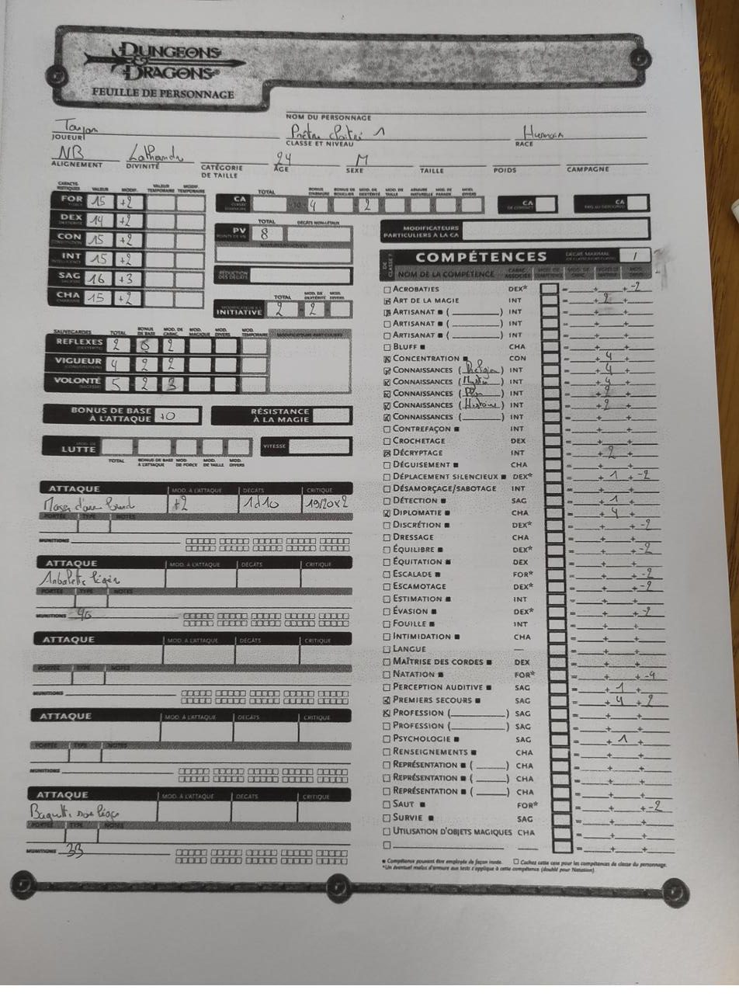
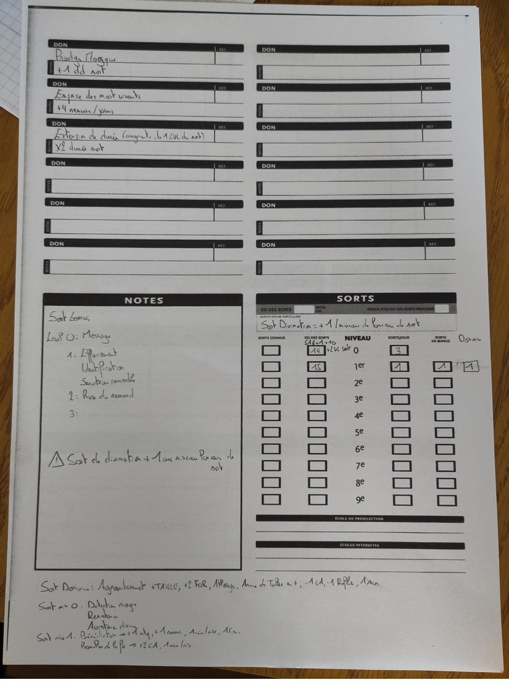
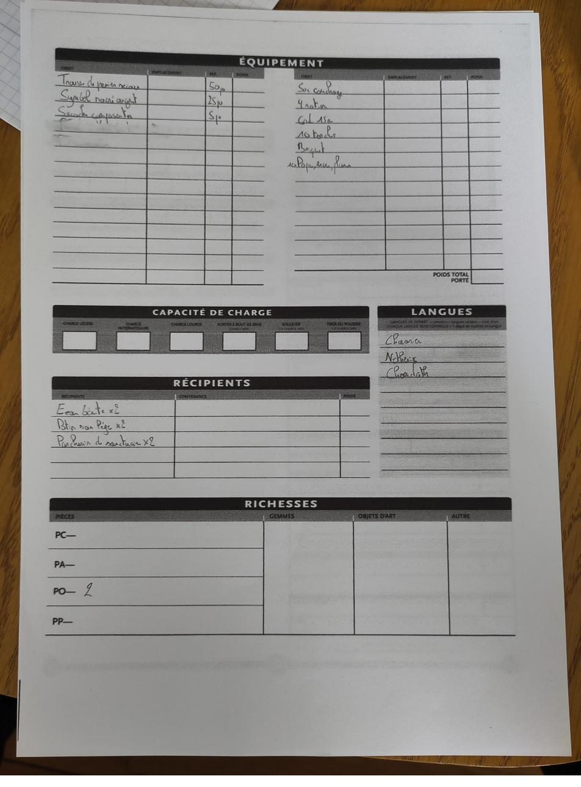
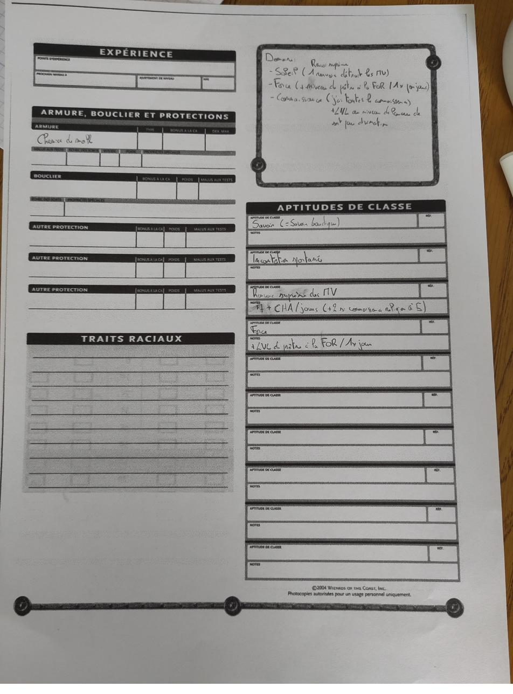

Isidoro
Prêtre cloîtré de Lathandre, fils du Père Théodoro de Derlusk.
Un érudit de 24 ans qui n’avait jamais quitté son monastère. Il corrige ce qui est inexact, sépare ce qu’on sait de ce qu’on suppose, et rêve depuis des années d’un elfe d’or qui relève les morts.
Identité
| Joueur | Antoine |
| Race et alignement | Humain, neutre bon |
| Classe | Prêtre cloîtré (Arcanes Exhumés p. 56-57), niveau 2 ; environ 2 950 XP sur 3 000 pour le niveau 3 |
| Âge | 24 ans |
| Origine | Derlusk, Royaumes Frontaliers, rive sud-est du Lac de Vapeur |
| Divinité | Lathandre, au sein de la Confrérie du Soleil Glorieux, qui tient Lathandre pour Amaunator revenu |
| Domaines | Soleil, Force, Connaissance |
| Langues | Shaarien, néthérisien (appris de son père), chondathan |
| Compagnon | Lucas « El Tiempo », joué par François |
La fiche
Les chiffres ci-dessous sont ceux de la fiche papier photographiée, établie au niveau 1. Ils seront à mettre à jour au passage au niveau 3.
Combat
| Points de vie | 8 |
| Classe d’armure | 16 (10 + 4 chemise de mailles + 2 Dextérité) |
| Initiative | +2 |
| Bonus de base à l’attaque | +0 |
| Réflexes, Vigueur, Volonté | +2, +4, +5 |
| Masse d’armes lourde | +2, 1d10, critique 19-20/×2 (tel qu’écrit sur la fiche) |
| Arbalète légère | 46 carreaux notés |
| Baguette de soins légers | 33 charges notées |
Compétences (degrés)
| Compétence | Degrés |
|---|---|
| Concentration | 4 |
| Connaissances (religion) | 4 |
| Connaissances (mystères) | 4 |
| Connaissances (plans) | 2 |
| Connaissances (histoire) | 2 |
| Diplomatie | 4 |
| Premiers secours | 4, +2 divers |
| Art de la magie | 2 |
| Décryptage | 2 |
| Déplacement silencieux, Détection, Perception auditive, Psychologie | 1 chacune |
Malus d’armure de −2 (−4 en Natation).
Dons
- Prodige magique : +1 au DD de tous les sorts. Le MJ applique la version 3.0, qui donne aussi des sorts en bonus.
- Emprise sur les morts-vivants : +4 tentatives de renvoi par jour ; condition d’entrée du Serviteur radieux.
- Extension de durée : double la durée d’un sort, qui coûte un niveau de plus.
Sorts et domaines
- DD des sorts : 14 + niveau du sort (Sagesse, Prodige magique). Sorts par jour au niveau 1 : 3 oraisons ; 1 sort de niveau 1, +1 en bonus, +1 de domaine.
- Oraisons notées : Détection de la magie, Résistance, Assistance divine.
- Niveau 1 notés : Bénédiction (+1 en attaque et aux sauvegardes contre la terreur, 1 min/niveau, 15 m) ; Bouclier de la foi (+2 CA, 1 min/niveau).
- Sort de domaine : Agrandissement (+1 catégorie de taille, +2 For, allonge, −1 CA, −1 Réflexes, 1 min).
- Sorts bonus notés : niveau 0, Message ; niveau 1, Effacement, Identification, Serviteur invisible ; niveau 2, Ruse du renard.
- Domaine du Soleil : renvoi suprême, qui détruit les morts-vivants au lieu de les repousser.
- Domaine de la Force : une fois par jour, +niveau de prêtre en Force pendant 1 round.
- Domaine de la Connaissance : toutes les Connaissances en compétences de classe, +1 niveau de lanceur aux divinations.
- Aptitudes de classe : Savoir (comme le savoir bardique), incantation spontanée, renvoi des morts-vivants (3 + Charisme par jour, +2 avec 5 degrés en Connaissances religion).
Équipement
- Sur la fiche : trousse de premiers secours (50 po), symbole sacré en argent (25 po), sacoche à composantes (5 po), sac de couchage, 4 rations, corde de 15 m, 10 torches, briquet, papier, encre et plume ; eau bénite ×2, potion de soins légers ×2, parchemin de sanctuaire ×2 ; 2 po.
- Gagné pendant l’aventure 2 : une fronde, la copie de la carte du prêtre de Champ-Doré, le livre néthérisien sur les puits d’ombre, des livres sur les gobelinoïdes et sa part du butin. Le détail suit.
Butin et finances de l’aventure 2
Les gains se partagent entre Isidoro et Lucas ; les montants par tête restent à vérifier sur vos feuilles.
| Source | Montant |
|---|---|
| Coffre du magicien | 2 400 po |
| Livres sur les gobelinoïdes | environ 500 po |
| Deux potions de poison revendues (aventure précédente) | 450 po net, soit 225 po chacun |
| Vente du butin des orques (Fort Corner) | environ 405 po |
| Bijoux du magicien | 400 po |
| Primes pour quatre têtes (Fort Corner) | 20 po |
| Pièces des orques | 52 pa et 77 pc |
Objets gardés
- Isidoro : le livre néthérisien sur les puits d’ombre, les livres sur les gobelinoïdes, une fronde, la copie de la carte de Champ-Doré.
- Lucas : l’Encensoir, la sacoche à potions, des fioles d’eau bénite, des vêtements de déguisement.
- Le grimoire du magicien : qui le garde, à préciser.
Dépenses notables
laissez-passer (10 po chacun), identification des potions (50 po), cadastre (2 po), Encensoir (10 po), sacoche (40 po), frais de voyage (au moins 4 po chacun). S’y ajoutent les nuits, les taxes, et les pertes de Lucas au jeu et aux voleurs.
Expérience
300 XP pour les orques, puis d’autres gains. Isidoro est à environ 2 950 XP sur 3 000, à la porte du niveau 3.








La foi
Isidoro est prêtre de Lathandre et membre de la Confrérie du Soleil Glorieux, un courant toléré de l’Église qui enseigne que Lathandre est Amaunator réincarné, le dieu-soleil néthérisien de la loi, de l’ordre, du temps et des serments. Cette croyance est purement narrative : elle ne change rien à la fiche.
| Position | Alignement | Conséquence |
|---|---|---|
| Confrérie du Soleil Glorieux (retenue) | Neutre bon possible | Tout fonctionne : domaine du Soleil, renvoi, Serviteur radieux |
| Hérétique du Soleil Levant | Strictement loyal | Perd le neutre bon, donc le Serviteur radieux |
| Prêtre d’Amaunator lui-même | Loyal neutre | Perd tout : dieu mort, règles des serviteurs des déchus |
Pour lui, un mort-vivant n’est pas une horreur : c’est une dette non honorée envers la mort, une clause violée. On ne le hait pas, on l’exécute.
à vérifier Le détail de la Confrérie et des hérésies vient de Lost Empires of Faerûn (2005), probablement absent en VF ; à croiser avec Dogmes et Panthéon p. 37.
La famille
- Le père, Père Théodoro : ancien fouilleur de ruines néthérisiennes pour un commanditaire, devenu prêtre du temple de Lathandre de Derlusk ; il a appris le néthérisien à son fils, veut qu’il parte et a payé la traversée. Pour qui fouillait-il ? La question reste ouverte (Château-Suif, Ménestrels, collectionneur sembien…).
- La mère : maternelle, veut le garder près d’elle ; seize ans de désaccord poli avec le père.
- Lucas : fils d’Antonio, l’ancien compagnon de fouille du père.
Les rêves
- Des cauchemars récurrents d’une divinité qui relève les morts : Velsharoon, dont Alcatar est l’Élu.
- Ils commencent l’année de l’ascension de Velsharoon (1368 CV selon les chroniques).
- À 8 ans, ses parents lui expliquent que ce n’est pas une maladie mais un message divin. Le père en tire qu’il faut savoir ; la mère, qu’il faut protéger.
- À l’abbaye du Cœur Radieux, Isidoro voit enfin le visage de ses rêves : Alcatar.
- Le MJ autorise explicitement la petite contradiction de dates (1368, 8 ans, 24 ans, campagne en 1373) : raconter par âges, pas par dates.
Les traits
règle maison Chaque déclenchement d’un trait rapporte de l’expérience, le double pour la version difficile. À ne pas confondre avec les traits des Arcanes Exhumés (p. 87), un tout autre système.
| Trait | Déclencheur | Version difficile |
|---|---|---|
| La Correction (acquis) | Rectifier toute information inexacte | Sans jet de Connaissances |
| La Première Fois (recommandé) | Découvrir une chose banale avec la mauvaise référence livresque | Citer le texte fautif et admettre à voix haute qu’il était faux |
| Le Doute Accepté (recommandé) | Agir sur une information invérifiable, sur la seule parole de quelqu’un | Le reconnaître publiquement après coup |
Le premier dit qui il est et reste constant ; le deuxième dit d’où il vient et s’éteint seul vers le niveau 6 ; le troisième dit ce qu’il devient et s’allume peu à peu. Le troisième est le miroir exact du premier.
Le jouer
- Ton : littéral, pas hautain. Il corrige comme on redresse un cadre de travers, sans y penser, et s’étonne sincèrement qu’on le lui reproche.
- Tic : il sépare à voix haute ce qu’on sait, ce qu’on suppose et ce qu’on raconte. « Vous l’avez vu, ou on vous l’a dit ? »
- Ce qu’il ne sait pas faire : le prix d’une chambre, les codes sociaux, la violence. Il connaît par cœur la théorie du phylactère mais ignore comment parler à un garde soudoyable.
- Compétences cohérentes : toutes les Connaissances, Décryptage, Langue ; pas Fouille ni Détection. Il ne trouve pas les pièges, il trouve les mensonges.
- Les rêves : à jouer comme une insomnie, jamais comme un pouvoir. Il se réveille avec des noms qu’il ne connaît pas et les note.
- Avec Lucas : à eux deux, un personnage complet. Lucas fait le social et le pratique, Isidoro le savoir.
- Signature : il vouvoie tout le monde, compagnons compris, jusqu’au niveau 6. Le premier tutoiement sera une scène.
| Niveaux | Il croit que… | Ce qui bascule |
|---|---|---|
| 1 à 6 | La vérité suffit, il faut lire davantage | Le monde lui apprend que les textes se trompent |
| 7 à 12 | La vérité ne suffit pas, il faut aussi frapper | Il devient capable d’exécuter la sentence |
| 13 et plus | Il faut aussi croire quelqu’un | Le trait du Doute Accepté se déclenche sans effort |
Le build
Le personnage suit l’archétype détaillé dans le guide Le Persistant : deux sorts rendus permanents chaque matin, payés en tentatives de renvoi.
- Moteur : Sort persistant (Codex Profane p. 83) et Métamagie divine (Codex Divin p. 82), soit 7 tentatives de renvoi par sort persisté. Puissance divine au niveau 7, puis Force du colosse au niveau 9, deviennent permanents.
- Classe de prestige : Serviteur radieux de Pélor (Codex Divin p. 70-72), valable pour Lathandre ; entrée réaliste au niveau 7. Conditions VF : neutre bon, Volonté +5, Connaissances (religion) 9 degrés, Premiers secours 5 degrés, Emprise sur les morts-vivants, sorts divins de niveau 1, domaine du Soleil.
- Contre Alcatar : Vitalité sacrée (Libris Mortis) pour l’immunité à l’absorption d’énergie ; Arme destructrice sur l’arme d’un allié ; Localisation suprême (domaine de la Connaissance, niveau 8) pour trouver les phylactères ; le sceptre de défi pour annuler la résistance au renvoi d’une liche.
- Caractéristiques retenues : For 15, Dex 14, Con 15, Int 15, Sag 16, Cha 15 (48 points). Ensuite +1 Cha au niveau 4, +1 Con au niveau 8, +1 Sag aux niveaux 12, 16 et 20. Cette répartition diffère des priorités du guide, qui conseillait Charisme 16 et Force 10.
Les règles vérifiées et les leçons de table sont sur la page Règles.
Questions ouvertes
Pour le MJ
- Métamagie divine est-elle autorisée sans plafond ?
- Le prêtre cloîtré peut-il porter un bouclier ? Le texte VF ne le dit pas.
- Les aptitudes de Guérison du Serviteur radieux s’appliquent-elles alors que Lathandre n’a pas ce domaine ?
- Les Cannes de nuit se cumulent-elles ? Oui selon le texte, déconseillé selon la FAQ.
- Changer de prise sur une arme à deux mains est-il une action libre ?
- Manferic III, la liche d’Ankhapur (roman King Pinch), fait-il partie du canon de la table ?
- Pour qui le père d’Isidoro fouillait-il les ruines ?
À vérifier dans les livres
- Vitalité sacrée : coût en tentatives et durée (Libris Mortis p. 25 et suivantes).
- Le nom VF de l’arme courante à deux mains avec allonge (Manuel des Joueurs p. 116, table 7-5).
- La région à choisir pour les dons régionaux, et l’accès au néthérisien comme langue morte.